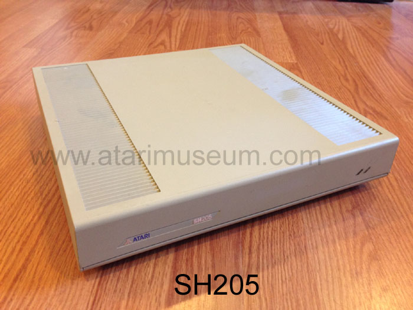
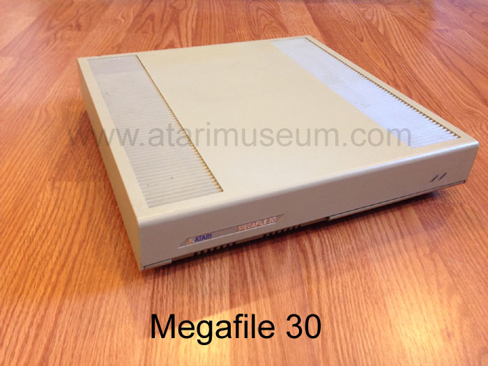
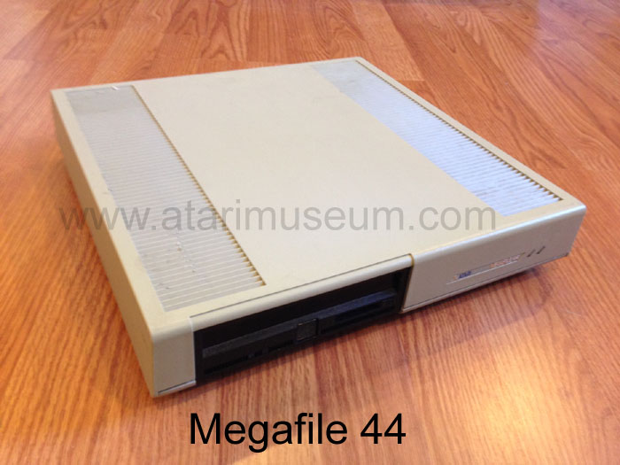
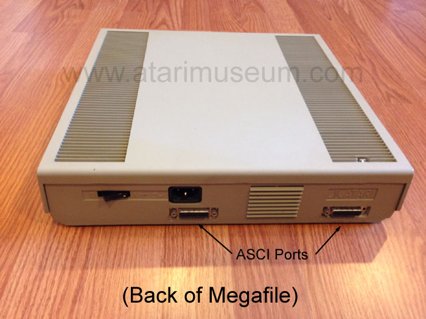

When Atari first introduced its Atari ST computer line, it also shortly there after released a hard drive for your computers. It was called the SH204. SH standing for ST Line Hard disk and 204 for a 20MB storage unit. As for the "4" designation, it is unknown. Perhaps it was version 4 of the design. In 1987 when Atari released its new Mega ST series. I new line of its ST computers in more professional pizza-box sized cases with detachable keyboards it also introduced its new Megafile line of storage systems. Before the new design would received its "Megafile" label, Atari began to produce its follow up to the SH204 called the SH205. Essentially a Megafile 20 with the early badge designator.

Atari's new Megafiles would final make their debut with the Mega ST's, new 20mb and 30mb models provided more than enough storage for Atari's new foray into the Desktop publishing field of which the Mega ST, the Megafile and the new SLM804 Laser printer would consist of. This Trifecta created a low cost, but equally capable Desktop Publishing system by Atari that would rival the Macintosh, all for less than the cost of an Apple Laserwriter alone.

The final "file" would be the Megafile 44 which provided the Atari ST user with unlimited storage. The system utilized a Syquest removable storage pack, each capable of holding 44mb's of storage. A user with 10 packs could have an unheard of (for its time) 440mbs of storage.

The true unsung hero of the Atari ST line and its Megafile's was its advanced interface system called ASCI which stood for Atari Small Computer Interface. It was a variant of the SCSI port standard and shares many of the same command functions. ASCI was less expensive, and slower than SCSI at around an average of 1300 KB/sec (1.3MB/sec) transfer speed. SCSI being much faster. However, this didn't make ASCI any less capable than SCSI. the ASCI port, or Atari DMA port could connect Mass Storage (Hard Drives and CDROM drives) as well as be used for high speed Laser Printers. Another not so well known feature and advantage of ASCI over SCSI was it was a self assigning connection Bus. SCSI required its host controller to be set to 7 and then each device set to a device number of 0 to 6 (Original SCSI 1 and 2 standard.) However with ASCI, it would auto assign device numbers allowing an ST user to simply plug in a device and prepare it for use, no complicated manuals, fumbling with setting switches or other issues. Also ASCI was self-terminating. No it didn't self-destruct on command :-) In SCSI, the last device had to have a SCSI terminator installed onto it to show it was the last device on the bus, otherwise the SCSI devices would not be recognized nor work. Some later SCSI devices had built in termination, but it had to be manually enabled. ASCI devices could simply be plugged in and would be ready for use.

In hindsight, it is a shame that Atari didn't produce and market an ISA bus compatible ASCI controller to sell into the PC market to allow PC users to have taken advantage of Atari's lower cost, feature capable storage and printing peripherals to further expand Atari's user base and put Atari's name and brand out into the broader market. This might've further cemented the ASCI standard into more area's making it adapted by more companies which in turn would've produced other storage and printing devices that would have also worked on ST computer systems.
ASCI Port Pinouts
Pin Name Description 1 D0 Data 0 2 D1 Data 1 3 D2 Data 2 4 D3 Data 3 5 D4 Data 4 6 D5 Data 5 7 D6 Data 6 8 D7 Data 7 9 /CS Chip Select 10 IRQ Interrupt Request 11 GND Ground 12 /RST Reset 13 GND Ground 14 ACK Acknowledge 15 GND Ground 16 A1 Address bit 17 GND Ground 18 R/W Read/Write 19 REQ Data Request